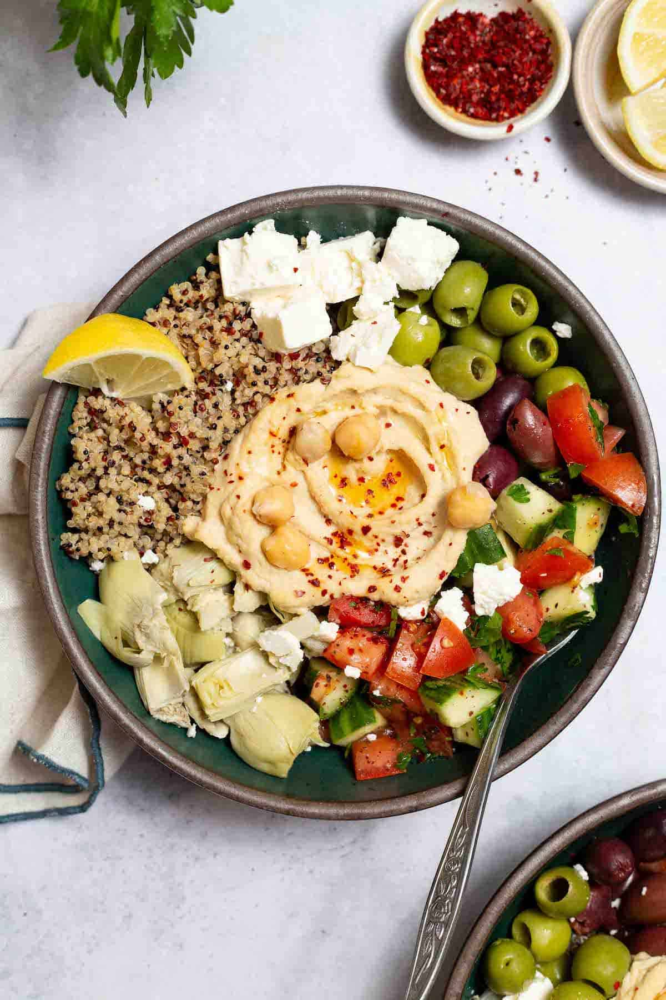

Home
Mediterranean Bowl Recipe

What is the Mediterranean Bowl?
This Mediterranean bowl is the answer to easy, quick, and healthy lunches and dinners–and an antidote to take
out temptation! With creamy hummus, tangy feta cheese, briny olives, tart and crunchy marinated artichoke
hearts, and fresh cucumber tomato salad, it’s a flavor party in every spoonful.
Ingredients
- Quinoa
- Hummus
- Cucumber and Tomato Salad
- Feta
- Olives
- Marinated artichoke hearts
- Extra Virgin Olive Oil
- Sumac
- Harissa Sauce
- Sea Salt
- Aleppo Pepper
Steps
- Cook the Quinoa:
Rinse 1 cup of quinoa and add to a large saucepan, along with 1 3/4 cups of water and a pinch of salt.
Bring to a boil, then lower the heat. Cover and let simmer for about 15 minutes, or until the quinoa
has doubled in size and absorbed the water. Turn the heat off and let the quinoa sit, covered, for
another 10 minutes while you work on other things. Fluff with a fork before using.
- Make the Cucumber and Tomato salad:
While the quinoa cooks, dice 6 Roma tomatoes and 1 large English or hot-house cucumber. Thinly slice 1/2
a small red onion, and chop the leaves and tender stems of 3/4 bunch parsley. Add to a large mixing bowl
and toss with a pinch of salt, 1/2 teaspoon black pepper, 1 teaspoon ground sumac, 2 tablespoons extra
virgin olive oil, and 2 teaspoons lemon juice.
- Assemble the Mediterranean Bowls:
Add about 1/4 of hummus to the bottom of 6 shallow dinner bowls. Divide the cooked quinoa and the
cucumber tomato salad salad on either side of the hummus. Fill the gaps with crumbled feta cheese,
pitted Kalamata and Castelvetrano olives, a spoonful of harissa (if using), and marinated artichoke
hearts.
- Finish and serve:
Drizzle a little olive oil over the hummus and wherever else you like. And if you like, add a
pinch of Aleppo pepper to season.